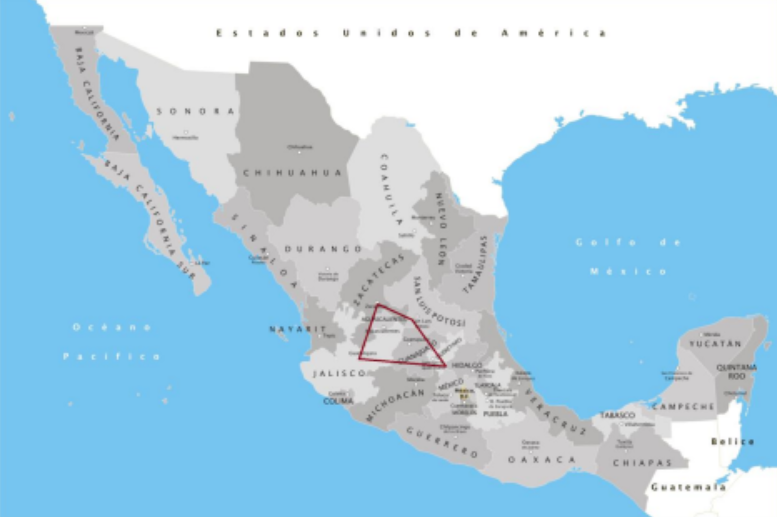
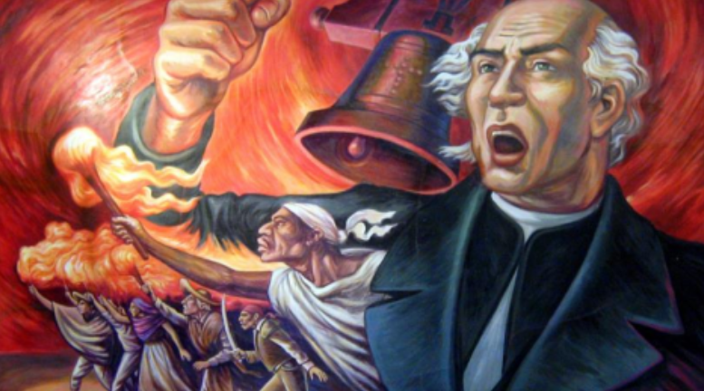
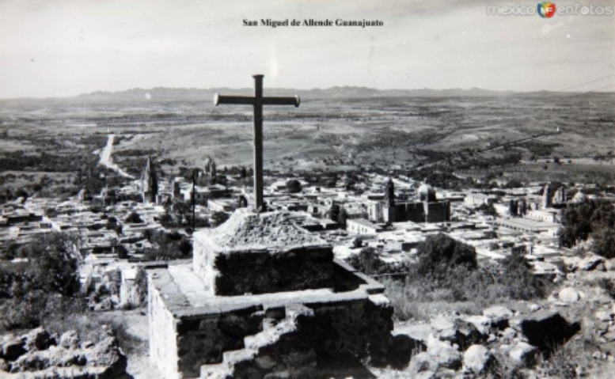

Letter from San Miguel de Allende, Part I: A History

Queridos Amigos,
Happy day after the Cinco de Mayo, the Mexican holiday commemorating the Mexican army’s victory over the French forces of Napoléon III at the Battle of Puebla on May 5, 1862. Although the Franco-Mexican War continued for another five years before the French were finally driven out of Mexico, the victory at Puebla became a symbol of Mexican resistance to foreign domination.
An even bigger celebration takes place on September 16, which marks the beginning of the Mexican War of Independence in 1810. The night before, the President of Mexico re-enacts Miguel Hidalgo’s famous Grito de Dolores (Cry of Dolores), where the parish priest called for rebellion against the Spanish Empire on the steps of the cathedral in the town of Dolores. The Mexican President lists the names of the important heroes of the Mexican War of Independence who were in the city of Dolores on that historic day. The Grito ends with the threefold shout of ¡Viva México!
While Hidalgo is recognized as the Father of the Nation, Ignacio Allende was at his side in Dolores and, as a military man, was critical to the organization and execution of the insurrection, as was his fellow military officer Juan Aldama. Both Allende and Aldama were from the nearby town of San Miguel El Grande. All three were captured by the Spanish army on March 21, 1811, and executed by firing squad. Their bodies were decapitated and their heads (along with that of fellow independence hero José Mariano Jiménez) suspended from the corners of the Alhóndiga de Granaditas (a grain warehouse turned fortress) in the city of Guanajuato until the end of the war.
The War of Independence dragged on for another ten years, ending with the Declaration of Independence of the Mexican Empire in Mexico City on September 28, 1821.
In 1826, the name of Dolores was changed to Dolores Hidalgo to commemorate the Father of the Nation, and the name of San Miguel El Grande was changed to San Miguel de Allende in honor of the role played by Ignacio Allende in the War of Independence. This year San Miguel is celebrating the 200th anniversary of the change of its name to San Miguel de Allende.

The events that took place in these three towns — Dolores, San Miguel and Guanajuato — and others, explain why the Bajío region of semi-arid central highlands roughly 150 miles northwest of Mexico City is called the Cuna de la Independencia (Cradle of Independence).
We spent two weeks In San Miguel de Allende at the end of April. Here is our trip report.
A Brief History of San Miguel de Allende and its Surroundings
The Beginnings
After Spanish Conquistadors defeated the Aztec empire in 1521, they marched on central Mexico to subdue the nomadic indigenous peoples in the region known as El Bajío. Soon adventurers came to seek their fortune by mining the silver discovered in the area, and settlers came to make a living raising cattle and growing crops.
Franciscan missionaries also came to spread Christianity. One such missionary, Fray (Friar) Juan de San Miguel, and a small number of indigenous children settled the first outpost in the region on the banks of the Río Laja in 1542. The “native” town was called San Miguel de los Chichimecas, named after the friar and the children’s tribe. In 1548, the settlement moved next to a nearby natural spring on a slope known as El Chorro. After an attack by another indigenous tribe, the settlement was abandoned in 1551.
Silver was discovered in Zacatecas to the north of San Miguel in 1546 and in Guanajuato to the south in 1555.
Beginning in 1550, and continuing through the end of the century, the Spanish constructed the Camino Real de Tierra Adentro (Royal Road of the Interior Lands), also known as the Ruta de Plata (Silver Route), to transport silver from the northern mining settlements to Mexico City, the capital of New Spain.
The Chichimeca repeatedly attacked Spanish mule trains and ranches between 1550 and 1590, during what was known as the Chichimeca War. Since the abandoned settlement of San Miguel was strategically located on the stretch of the Silver Route between the two “silver cities” of Zacatecas and Guanajuato, in 1559 the Viceroy of New Spain ordered the establishment of a military outpost, officially named “Villa [small town] de San Miguel El Grande”, on that site to protect the Silver Route. A first parish church was built in 1564. Mule caravans transporting silver would stop overnight at mesones (inns) in the “protective town” (meaning that it was fortified) of San Miguel (the origin of today’s street named Calle Mesones that runs alongside the town’s original central square).
During the 17th century, San Miguel became one of the boomtowns of the Bajío region. Scores of haciendas sprang up all over the town, producing cattle, wheat and corn. San Miguel also developed a textile industry. The town flourished.
Late in the 17th century, construction began on the new parish church named la Parroquia de San Miguel Arcángel (the Parish of San Michael Archangel).
In the 18th century, the principal criollo (creole) families (born in Mexico but of Spanish descent) in San Miguel society — including the Allende, Aldama, and de la Canal families — built opulent new residences around a new central plaza opposite the parish church (today’s Plaza El Jardín Principal or Jardín Allende, or simply El Jardín), which replaced the original central square (today’s Plaza Cívica) as the heart of the town. (The Casa Allende and the Casa del Mayorazgo de la Canal, which overlook El Jardín, can be visited today.) Many churches, monasteries and chapels were also constructed thanks to their patronage.

In 1777, the Mexican philosopher Juan Benito Diaz de Gamara declared that “the villa of San Miguel El Grande in the bishopric of Michoacán is one of the most beautiful and celebrated in this northern America.” It was San Miguel’s golden age.
By the mid-18th century, San Miguel’s population had grown to 30,000, more than in any town in the 13 British American colonies at that time.
The Cradle of Independence
French Emperor Napoléon Ier invaded Spain in 1808 and placed his brother Joseph on the Spanish throne after forcing the abdication of the Spanish king Carlos IV. In Spain and many of its overseas possessions, people resisted by setting up juntas made up of local dignitaries ruling in the name of the deposed monarch. This first example of local rule set in motion the independence movement that swept through the New World, inspired in part by the ideas of the Enlightenment and the American and French Revolutions.
Ignacio Allende and Juan Aldama, sons of prominent San Miguel families, both served as officers in a provincial infantry regiment financed by local creole families and approved by the Viceroy.
Fearing that New Spain would be taken over by the French, Ignacio Allende held secret meetings with like-minded friends, including Juan Aldama, at his family’s mansion in San Miguel to plan an insurrection against Spanish rule. Similar meetings were held in Guanajuato. Allende proposed that the insurrection movement be led by Miguel Hidalgo, the highly-respected parish priest of the nearby town of Dolores. Hidalgo agreed.
When Spanish loyalists were alerted to the plot to overthrow the government, the conspirators were compelled to take action. The Mexican War of Independence started on September 16, 1810 (now celebrated as Independence Day) when Hidalgo issued the Grito de Dolores (the Cry of Dolores) from the steps of the cathedral in the town of Dolores, a call to arms in reaction to the French invasion of Spain.

From Dolores, Hidalgo led his army to the nearby settlement of Atotonilco, where he gave another call to arms and seized a banner from the Catholic church Sanctuario de Jesús Nazareno that bore the image of the Virgen de Guadalupe, which became the official flag for the Mexican army and a symbol of independent Mexico.
Hidalgo’s army took the towns of San Miguel and Guanajuato, but in January 1811 was defeated by royalist forces at the Battle of the Calderón Bridge. Hidalgo, Allende and Aldama were all captured and executed. The battle marked the end of the first phase of the War of Independence.
After Hidalgo’s capture and execution in 1811, leadership then passed to José María Morelos, who was similarly defeated and executed. The conflict saw fluctuating allegiances, culminating in a pivotal moment when royalist leader Agustín de Iturbide shifted sides to collaborate with the insurgents, leading to the Plan de Iguala and eventual independence in 1821.
The Aftermath
During the War of Independence, the town of San Miguel was ravaged and its industries were decimated. By 1821, there were fewer than 5,000 inhabitants in San Miguel.
On March 26, 1826, the city was renamed San Miguel de Allende in honor of its native son and hero of the independence movement, and was given the sobriquet la Fragua de la Independencia (the Forge of Independence) because of the decisive role played by the conspirators’ meetings in the Casa de Allende. The Calle Aldama near the central plaza El Jardín, now considered by many to be the most picturesque street in San Miguel, was named after another native son and independence hero, Juan Aldama.

Rebirth
For the remainder of the 19th century, San Miguel de Allende remained depopulated and impoverished. It risked becoming a ghost town. But the 20th century brought both an industrial and cultural revival.
After the original façade was damaged, between 1880 and 1890 Zeferino Gutiérrez, a local mason with no formal architectural training, built the spectacular new façade of pink sandstone on the parish church overlooking the central plaza, la Parroquia de San Miguel Arcángel (commonly known as la Parroquia), which immediately became the symbol of San Miguel de Allende.


In 1895, San Miguel mayor Dr. Ignacio Hernández Macías began purchasing vegetable gardens near the springs of El Chorro with a view to creating a public park. In 1904, the park was officially inaugurated and named in honor of Joaquín Obregón González, Governor of Guanajuato. In 1917, the park was renamed to honor Benito Juárez, Mexico’s first Indigenous president who governed from 1857 to 1872.

In 1902, “La Aurora” Cotton Yarn and Weaving Factory was founded at the northern edge of San Miguel. It soon became one of Mexico’s largest textile factories and San Miguel’s largest employer.

In 1926, the Mexican government designated San Miguel de Allende a national monument, which meant that, among other things, the construction of tall buildings or other structures that would compromise the city’s historic center was prohibited. This ensured that the historic center of San Miguel would be preserved.

In the 1930s and ’40s, San Miguel began to attract both nationals and foreigners to attend newly created art schools.
In 1937, Felipe Cossío del Pomar, a Peruvian painter and ex-diplomat in exile who moved to San Miguel in 1927, and Stirling Dickinson, an American artist from Chicago who had just arrived in San Miguel, founded a private art school called the Escuela de las Bellas Artes in the cloister of the Templo de la Immaculata Concepción (popularly known as Las Monjas after the nuns who inhabited the convent next to the church), which was built in the 18th century and had lately served as an army barracks. Dickinson served as the director of the school. Both Cossío and Dickinson left San Miguel and the art school during World War II. In 1946, their art school became an independent part of the Guanajuato State Department of Education with the creation of the Instituto Nacional de Bellas Artes, which now also runs a cultural center in the same building known as the Centro Cultural Ignacio Ramírez “El Nigromante” (commonly known as “Bellas Artes”).

After they returned to San Miguel after the war, Cossío and Dickinson, along with native son and former Guanajuato governor Enriquez Fernández Martínez and his American wife, Nell Harris, founded a second art school, the Instituto Allende, in 1950 in the former residence of the hacienda of the Canal family on Ancha de San Antonio, which was built in 1735 at what was then the southwest edge of town and was later occupied by Carmelite nuns. The art school is now part of the Universidad de Guanajuato.

San Miguel’s art schools attracted many foreign students, including American veterans of World War II whose tuition was paid by the G.I. Bill. Many stayed in San Miguel following their studies.
Other expatriates followed, including many retirees from the United States and Canada who were attracted by San Miguel’s colonial charm and relatively low cost of living.

Magical San Miguel
The 21st century has seen San Miguel’s transformation into a cosmopolitan city with luxury hotels, fancy restaurants with rooftop lounges, high-end shopping, and exclusive residential developments — all, as one guidebook put it (and we can confirm), “with New York City price tags.” It is estimated that about half of the colonial buildings in the Centro Histórico have been partially or fully converted into businesses such as stores, restaurants, galleries, workshops and hotels.
Representative of the shift in San Miguel’s economy from manufacturing to high-end tourism, the Fábrica La Aurora textile factory ceased operations in 1991, but reopened in 2001 as a venue for dozens of artists’ studios, art galleries, shops and restaurants.
In 2002, Mexico’s Secretariat of Tourism designated San Miguel de Allende a Pueblo Mágico (Magical Town), promoting its “cultural richness, historical relevance, cuisine, art crafts, and great hospitality.” (As of 2023, there were 177 Pueblos Mágicos, located in each of the 31 Mexican states.)
Even more importantly, in 2008 the historic center of San Miguel was designated a UNESCO World Heritage Site, along with the nearby church, Sanctuario de Jesús Nazareno de Atotonilco. As UNESCO notes on its website:
The fortified town, first established in the 16th century to protect the Royal Route inland, reached its apogee in the 18th century when many of its outstanding religious and civic buildings were built in the style of the Mexican Baroque. Some of these buildings are masterpieces of the style that evolved in the transition from Baroque to neoclassical. Situated 14 km from the town, the Jesuit sanctuary, also dating from the 18th century, is one of the finest examples of Baroque art and architecture in the New Spain.